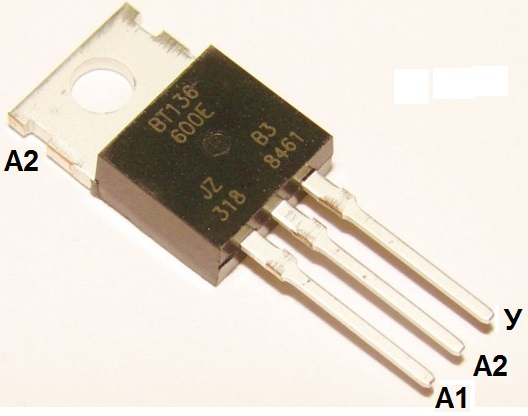
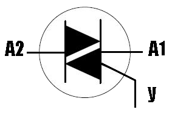
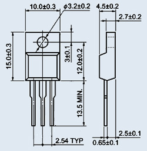

Cимистор BT136-600(D,E)
BT136-600(D,E) - симисторы (симметричные тиристоры) средней мощности в корпусе TO-220.



Рис. 1 - Внешний вид, цоколевка, условное графическое обозначение и размеры симистора BT136-600
| Параметр | BT136-600 | BT136-600D | BT136-600E |
|---|---|---|---|
| Максимальное повторяющееся импульсное напряжение в закрытом состоянии Uзс.повт.макс, В | 600 | ||
| Максимальное обратное напряжение Uобр, В | 600 | ||
| Максимальное среднеквадратическое значение (RMS) тока в открытом состоянии Iос.ср.макс, А | 4 | ||
| Максимальный однократный импульсный ток (20 мс) I кр макс, А | 25 | ||
| Отпирающий ток управления,мА | <35 | <5 | <10 |
| Отпирающее управляющее напряжение, В | 1,5 (макс.) 0,7 (тип.) | ||
| Ток удержания, мА | <30 | <15 | <20 |
| Напряжение в открытом состоянии Uос,В | 1,7 (макс.) 1,4 (тип.) | ||
| Время включения tвкл, мкс | 2 (тип.) | ||
| Корпус | TO-220 | ||